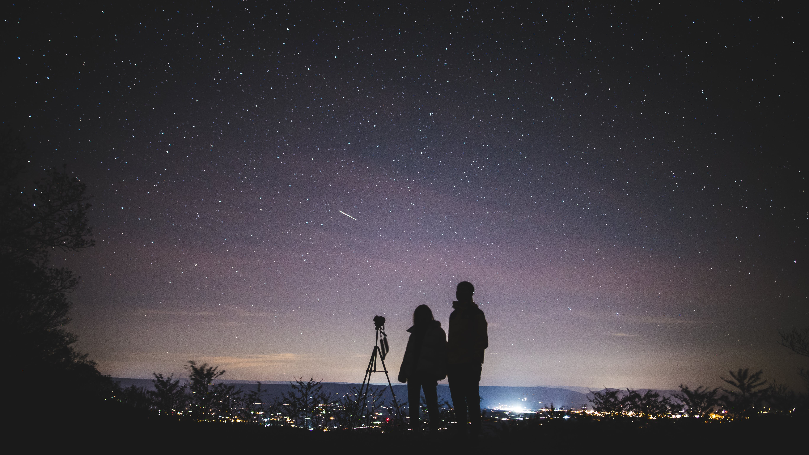

Organization Background

Founded in 2010 by a visionary group of astrophysicists, environmentalists, and artists, Nightlight emerged from a shared concern about the diminishing visibility of stars and celestial wonders due to rampant light pollution. This eclectic mix of professionals believed in the power of art and science to unite communities and drive positive change.
What Nightlight Has Done so Far?
hello